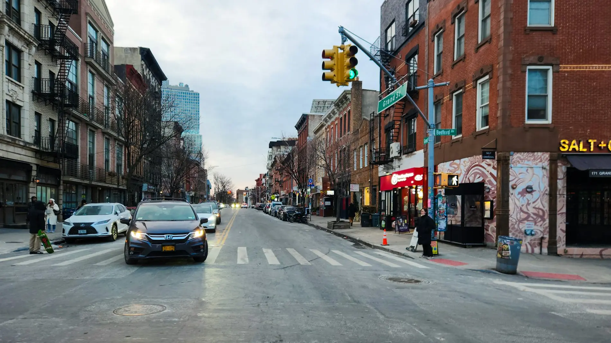
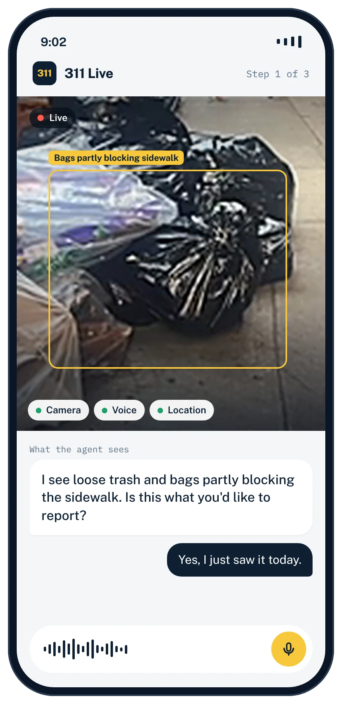
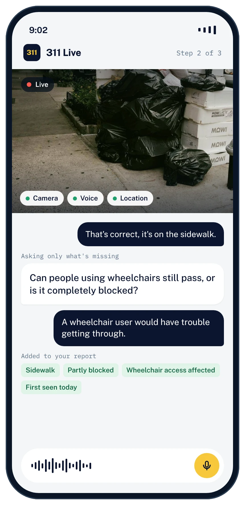
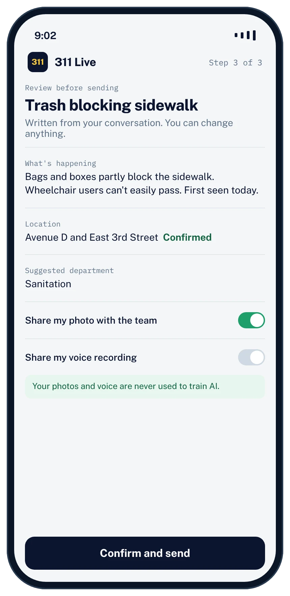
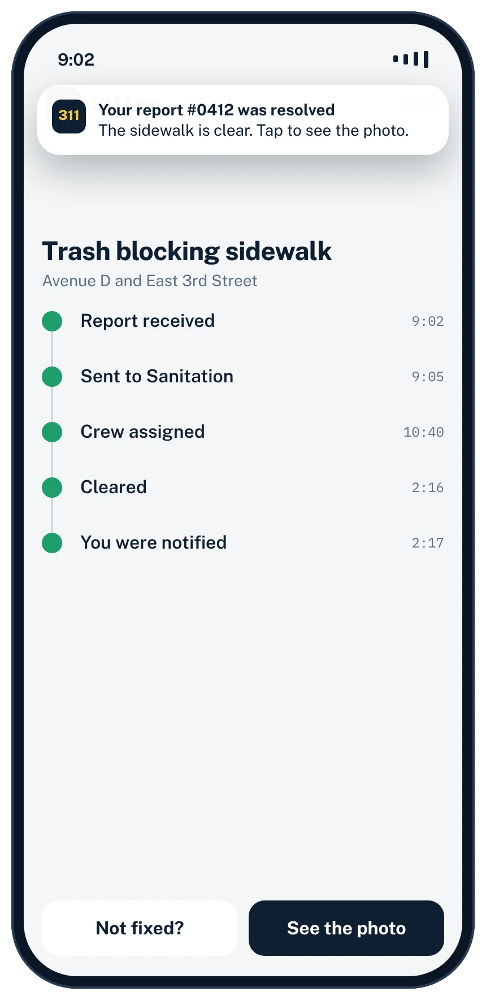
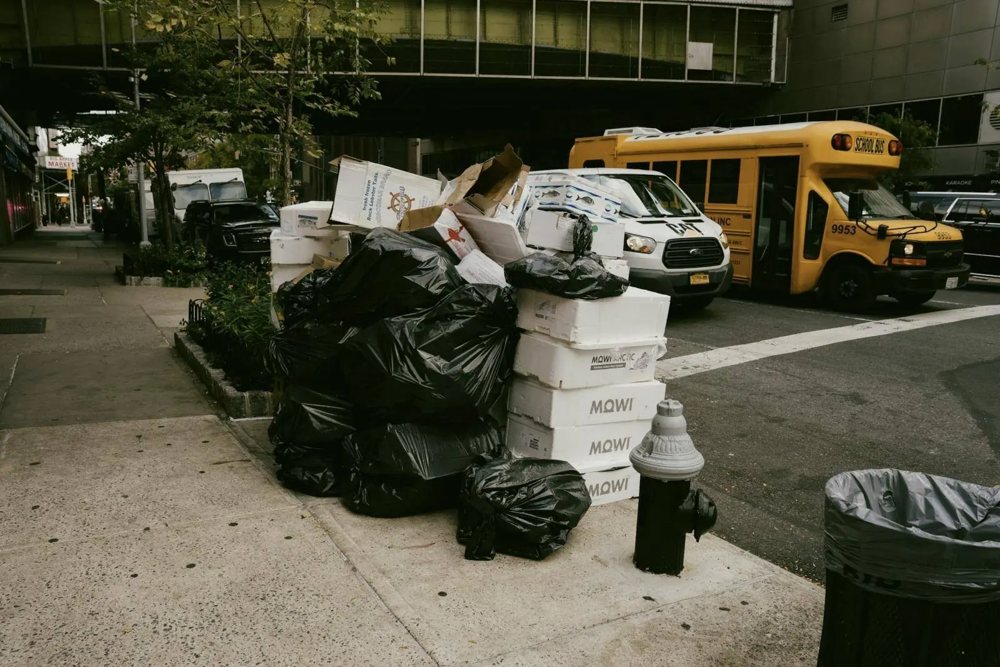
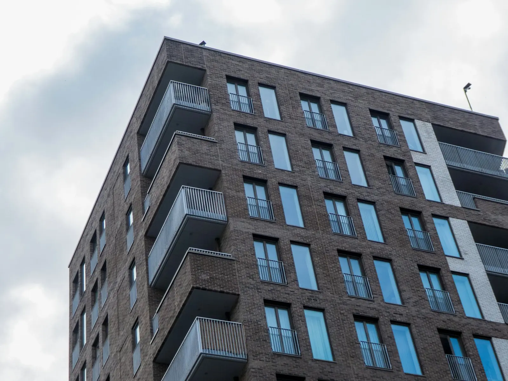
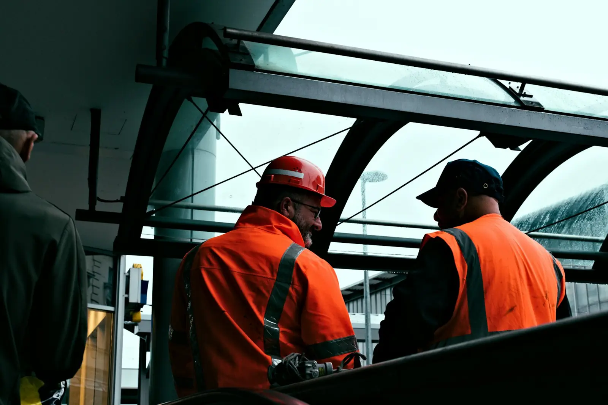
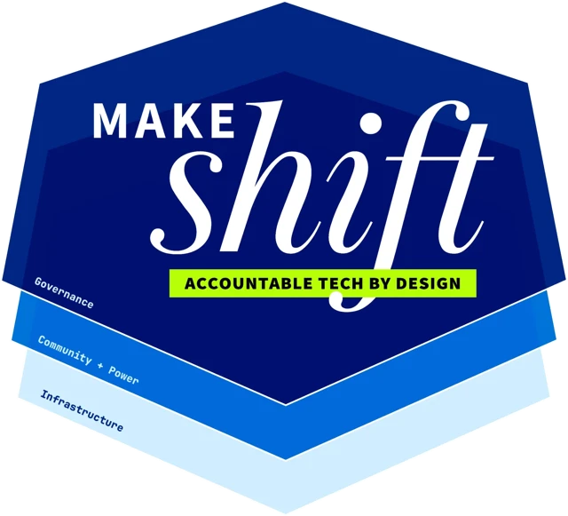
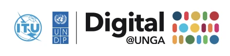

A Photo and a Few Words Become a Ticket a Crew Can Act On
CityWeave is a live AI agent that turns what people see and say into a structured, actionable ticket.
Book a MeetingForms Leave Out What Teams Need
Problems are noticed on the go, where typing into a form is impractical. Phone reports carry urgency and frustration alongside the facts, and operators and form recipients must filter one from the other. What reaches the responsible team is rarely a clear ticket it can act on, so work begins with follow-up instead of resolution.
Like Talking to Someone Who Can See What You See
311 Live, our first product, lets residents report a city problem by showing it and describing it aloud.




Swipe to see each step
Not Just City 311
The same engine is set up with each team's own categories and fields. Other use cases include campuses, property maintenance and field crews, then housing, permits, storm damage and anywhere a form stands between people and help.

Cities
Complete tickets for 311 teams and the agencies behind them.
Learn More →Campuses
One easy way to report a problem anywhere on campus.
Learn More →
Property
Technical work orders that save maintenance trips and hours.
Learn More →
Field Teams
A complete report from wherever the work is.
Learn More →Others Added a Chatbot. We See the Scene.
Web and App Forms
- Sees the problem
- Understands speech
- Asks what's missing
Text Chatbots
- Sees the problem
- Understands speech
- Asks what's missing
Phone Agents
- Sees the problem
- Understands speech
- Asks what's missing
CityWeave
- Sees the problem
- Understands speech
- Asks what's missing
Help Us Find a First Pilot
We are seeking one team to pilot one workflow with us: a city department, a campus, a property manager or any organization that wants to streamline its reporting process. An introduction or your feedback would be highly valued.


Ready to Get Started?
Book a meeting and we will give you a live demo, walk you through the product and discuss the workflow you would like to improve.